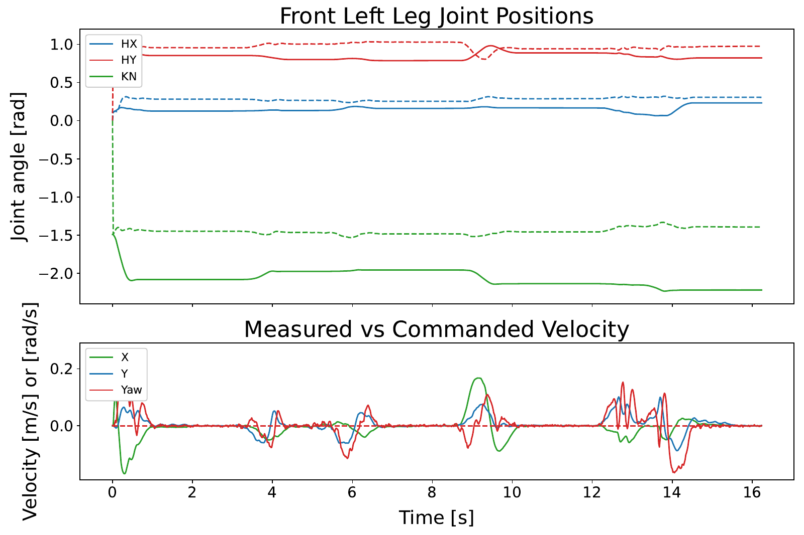

Field notes / 01 · Master's thesis · LTH · 2026
Learning in simulation.
Deploying on Spot.
A reinforcement-learning pipeline for standing and command-following locomotion—with real hardware tests, logged limitations, and the source behind the results.
01 / Contribution
A shared thesis.
An end-to-end pipeline.
Co-authored with Fredrik Sundt. We shared the work equally across simulation/reward design, policy evaluation, deployment adapted for Spot's arm, and hardware-log analysis. This is team work, not a claim of sole authorship.
The implementation builds on NVIDIA's Isaac Lab tools and Boston Dynamics' Spot RL example. The repository identifies these dependencies and includes setup documentation, policies, training/deployment logs, and plotting code.
Isaac Lab
Parallel simulation, rewards, standing and locomotion policy experiments.
Exported policy
Deployment integration and robot-specific observation/control handling.
Jetson → Spot
Onboard inference, supervised hardware tests, and log analysis.
02 / Results
Strong simulation.
Qualified transfer.
The warm-start standing policy improved success over the NVIDIA baseline in the thesis evaluation. These are simulation success rates, not real-robot reliability numbers.
| Suite | Tasks | Baseline | Warm-start |
|---|---|---|---|
| Normal | 15,872 | 97.3% | 100.0% |
| Stress | 64,512 | 93.4% | 95.0% |
On hardware, we deployed standing and locomotion, including multi-direction steps and continuous walking. The locomotion tests retained an overhead safety harness. They demonstrate deployment, but do not validate unrestricted robustness or a hardware success rate.

03 / What remains
The transfer gap
is part of the result.
Simulation is only one part of a robot system. Hardware tracking differences and safety constraints limited what could be concluded from deployment. Those differences are documented rather than hidden behind a single success percentage.
- Standing and locomotion were the demonstrated tasks. Door interaction and traversal remain future ambitions, not completed outcomes.
- The locomotion harness restricted validation of free movement and full disturbance robustness.
- The hardware logs reveal policy-target versus measured-joint mismatch that needs further investigation.
For a shorter overview, read the Swedish popular-science summary (PDF, 1.1 MB). The full report and public repository provide experimental conditions, implementation detail, and attribution.
Continue the conversation